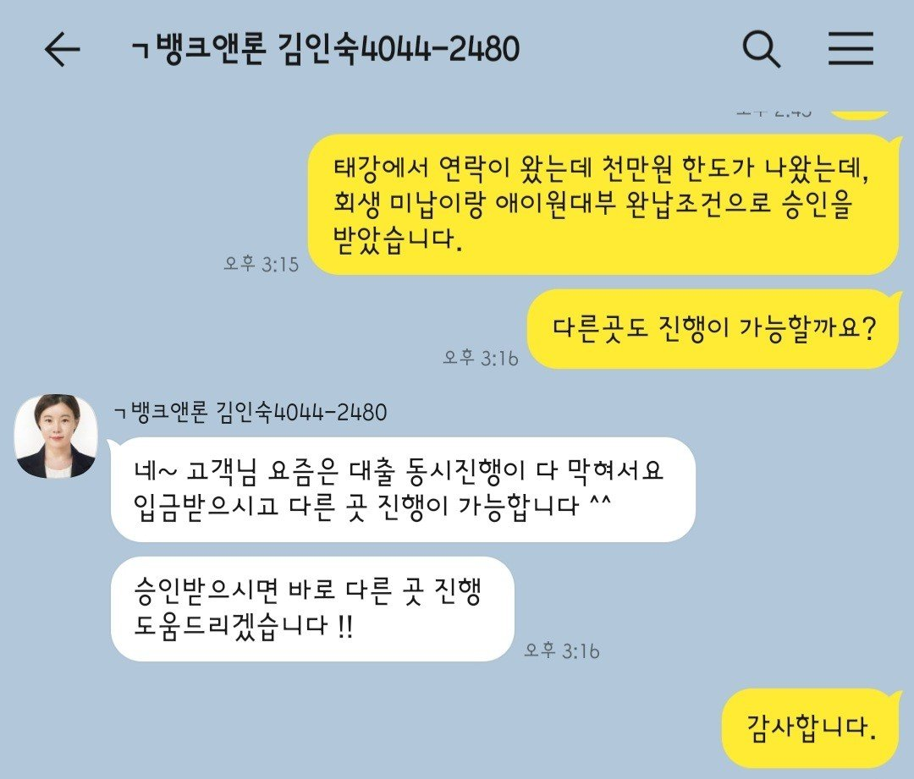

[개인회생자대출] 김인숙님 상담후기
안녕하세요.
전세자금으로 부득이하게 자금이 부족하여 대출 문의를
드렸습니다.
[개인회생(재회생) 28회차로 3회 미납
애니원 150만원]
최근에 이직을 하여 3개월 근무를 하였으며, 4대보험 가입이 안되어 있습니다. 월 180만 소득이 있습니다.(세후)
태강대부에서 1000만원 승인나서 진행하여
회생 미납이랑 애니원 완납조건으로 대출을 진행하였습니다.
이직 기간이랑 4대보험이 가입이 안되어 있어 걱정을
하였는데, 대출이 되어 얼마나 다행인지 모르겠습니다.
늦게까지 "김인숙"상담사님 수고 많으셨어요.
감사합니다.

오늘 정말 고생하셨구요. 감사합니다~